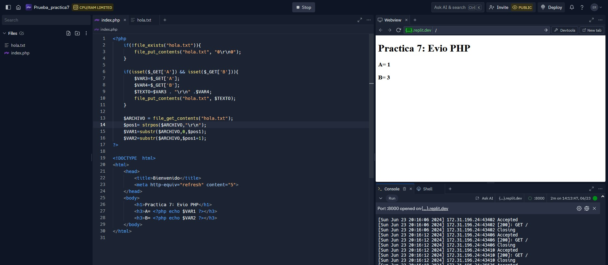

Práctica: Envío PHP
Resumen
En este proyecto, desarrollamos una página web con PHP y la implementamos tanto en un servidor local como en un servidor en la nube. Utilizamos una ESP32 para enviar datos a esta página web y verificar su correcto funcionamiento. Nuestro objetivo principal fue comprender y demostrar cómo se integran estos componentes para crear un sistema interactivo y funcional.
Introducción
El avance de la tecnología nos permite conectar dispositivos y sistemas de manera eficiente. En este proyecto, nos propusimos explorar la integración de una página web programada en PHP con un servidor local y uno en la nube, utilizando una ESP32 para el envío de datos. Este tipo de sistemas es fundamental en el desarrollo de aplicaciones de IoT (Internet of Things), donde los dispositivos necesitan comunicarse y actualizar información en tiempo real.
Herramientas
- ESP32 WROOM32
- XAMPP
- 000webhost
- Arduino IDE
- Replit
Desarrollo
Objetivo General
Conocer, identificar y comprobar el funcionamiento de una página web con programación PHP, Servidor Local, un servidor en la nube y envío de datos con el módulo ESP32.
Objetivos específicos
- Utilizando bloc de notas desarrollar una página web con código PHP que permita actualizar el valor de un sensor. Recuerda guardar el archivo como “index.php”.
- Utilizando XAMPP, coloca la página web en el servidor local y visualízala en el explorador, corrobora el correcto funcionamiento para actualizar los valores de la página.
- Utilizando otra computadora y una conexión con el servidor local mediante su dirección IP, modifica los datos de la página Web de PHP utilizando la siguiente URL con la IP correcta:
192.168.0.X/?A=1&B=3 - Utilizando un servidor en la nube, sube tu página Web de PHP, visualízala en el explorador con la dirección Web y corrobora su funcionamiento directo desde el explorador.
- Utilizando el NodeMCU y el ejemplo de GET, realiza una conexión con el servidor local mediante su dirección IP y modifica los datos de la página Web de PHP utilizando la siguiente petición (Request) con la IP correcta:
192.168.0.X/?A=1&B=3 - Utilizando un servidor en la nube, sube tu página Web de PHP, utilizando el NodeMCU y el ejemplo de GET, realiza una conexión a la dirección Web y corrobora el funcionamiento del sistema directo desde el explorador.
Resultados
Página web con PHP
Para esta práctica, utilizamos Replit para crear nuestra página web utilizando PHP. Hicimos la página muy sencilla, agregando un título principal con el nombre de la práctca y dos "h3" donde se visualiza la información que actualizaremos más adelante.
Probando servidor local
Para probar el servidor local, utilizamos el programa XAMPP. Para ver la página que hicimos en Replit, copiamos el código y lo pegamos en un bloc de notas con el nombre "index.php" y lo guardamos en XAMPP.

Para probar el funcionamiento del servidor en XAMPP, iniciamos el modulo de Apache, después abrimos un navegador y escribimos "localhost" o la dirección IP de nuestro internet, que en nuestro caso es "192.168.1.93".
Probando servidor local en otro dispositivo
Utilizamos otra laptop para probar el correcto funcionamiento del servidor, en este caso, utilizamos la dirección IP: 192.168.1.93.
Probando página web en un servidor en la nube
000webhost es un proveedor de alojamiento web gratuito que permite a los usuarios subir y alojar sus páginas web en la nube sin costo alguno. Ofrece soporte para PHP y MySQL, facilitando la creación de sitios web dinámicos e interactivos. Con un panel de control intuitivo, 000webhost es ideal para desarrolladores, estudiantes y pequeños emprendedores que desean poner en línea sus proyectos de manera sencilla y rápida. Utilizamos 000webhost para subir nuestra página web de PHP y alojarla en la nube, asegurando su accesibilidad desde cualquier lugar con conexión a Internet.
Probando la conexión local con ESP32 y PHP
En esta parte de la práctica, utilizamos la ESP32 para probar el funcionamiento de la página web en el servidor local. La ESP32 se conectó al servidor local mediante la dirección IP "192.168.1.93" y utilizamos la petición GET para modificar los datos de la página web de PHP, comprobando que la ESP32 podía interactuar correctamente con el servidor local.
Probando la conexión en la nube con ESP32 y PHP
Finalmente, subimos la página web de PHP a un servidor en la nube utilizando 000webhost y probamos la conexión con la ESP32. La ESP32 se conectó a la dirección web proporcionada por 000webhost y realizamos una petición GET para modificar los datos de la página web, asegurando que el sistema funcionaba correctamente desde cualquier lugar con acceso a Internet.
Conclusiones
Con este proyecto, logramos implementar y comprobar el funcionamiento de una página web con PHP en diferentes entornos de servidor, tanto local como en la nube. La utilización de la ESP32 para enviar datos y actualizar la página web en tiempo real demostró ser una solución efectiva y práctica para aplicaciones de IoT. Este ejercicio no solo nos permitió entender mejor la comunicación entre dispositivos y servidores, sino que también sentó las bases para futuros desarrollos en sistemas interconectados y automatización.
Referencias
No hay referencias
Descargables
No hay descargables